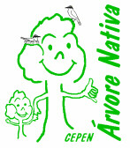
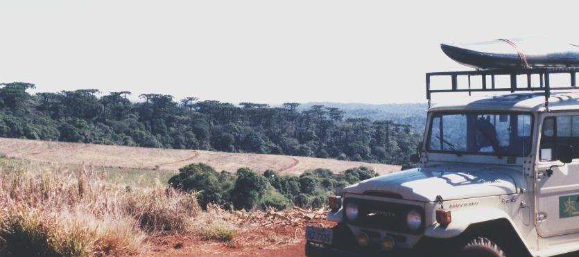
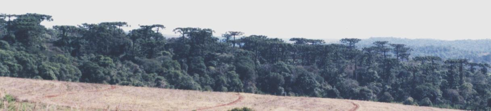

Retorna para Índice Campanhas

Campanha
Árvore Nativa:
Plantemos esta idéia
Prólogo
A Recomposição
Argumento ad judicium
Necessidade de Participação Geral
Duração desta campanha
Dicas do CEPEN
para você mesmo fazer e cultivar
as suas mudas de árvore
Prólogo
Nesta campanha, o CEPEN pretende estimular a recomposição
da identidade, da autenticidade e do caráter que constituíam o perfil original
dos ambientes naturais da América neotropical.

Foto: arquivo CEPEN / 325e / M.D.N. Xavier
Raríssimo exemplo de Mata de Araucária preservada numa região agrícola.
Veja abaixo, com maior zoom.

A Campanha está direcionada à todos os ambientes,
mas acredita-se que suas conseqüências serão mais prontamente apreciadas nas cidades,
já pelo maior número de espectadores, mas sobretudo, por ser o perímetro urbano
o maior alvo das introduções de espécies exóticas descaracterizadoras do ambiente.
A Recomposição do perfil original dos ambientes naturais
da América neotropical
Milhões de anos de evolução das espécies nos mais variados ecossistemas
compuseram a identidade e o caráter que constituíram o perfil original
dos ambientes naturais (perfil anterior à da ação do Homem tecnológico).
Nas últimas 10 gerações humanas, sobretudo nas três ou quatro últimas,
o Homem promoveu uma transformação ambiental sem precedentes na sua história.
Com o motor à explosão então surgido e os aperfeiçoamentos químicos subseqüentes, abandonou a tração animal e as ferramentas manuais
e avançou com força sobre a vegetação original
ocupando rapidamente quase toda a superfície restante de terras do planeta.
Varreu a cobertura original multidiversificada e equilibrada,
e impôs algumas poucas espécies, em monocultura intensivas,
para sustentar sua própria espécie em desabalado crescimento populacional.
Perderam com isto o ambiente e todos os que nele estão (ou estavam),
inclusive o próprio Homem,
que tem sentido esvair-se um muito de sua qualidade de vida.
Como um reles vírus ou bactéria que grassa em ambiente favorável,
o sapiente
Homo sapiens
está agora se afogando
num ambiente repleto de suas próprias toxinas,
assolado por outros vírus, bactérias, que em sua população vicejam,
sendo limitado pela natureza tal como qualquer coisa viva.
Os menos aptos de sua espécie são,
naturalmente (e desumanamente) eliminados do meio.
(nunca na história, viveu e morreu tanta gente de fome, miséria e doenças).
Mas não precisa ser assim,
é só conhecermos a natureza e seus mecanismos de manutenção da vida,
e deles valermo-nos para nossa própria qualidade de vida.
Uma das regras principais da natureza é:
"Quanto maior a diversidade, maior a estabilidade, a tendência ao equilíbrio."
A América neotropical "pré-colombiana" foi o maior exemplo vivo conhecido de como,
e até onde pôde chegar o fenômeno chamado vida,
na suas mais variadas e inimagináveis expressões (biodiversidade).
Desta fantástica coleção de genes (possibilidades de expressão de vida)
ainda resta opulenta riqueza,
ainda há tempo para que seja em grande parte preservada.
A recuperação ambiental é simples, mas demorada
(intervalo entre gerações de árvores ("urbe" dos bichos) geralmente requer décadas,
e são necessárias muitas gerações delas,
para que o ambiente adquira um certo equilíbrio).
À nós, cabe estabelecer um caminho e dar os primeiros passos,
o mais, caberá às gerações futuras dar segmento.
Necessidade de Participação Geral
O ar, bem comum, e o ambiente em que vivemos,
merece um toque pessoal de cada um.
Seja uma simples observação, comentário, análise, ou
a pressão de um dedo em uma semente sobre solo fértil.
Qualquer pequeno toque ajuda. Pode fazer nascer uma árvore
de dezenas de toneladas e de muitos metros de altura.
Árvore que poderá durar centenas de anos ajudando o ambiente e a vida.
Para esta Campanha,
é fundamental a participação também das pessoas de mídia
e formadores de opinião, das pessoas que dão um toque no público,
e que tem seu coração por eles tocado, nossos grandes artistas, esportistas,
políticos responsáveis e comprometidos com o bem estar comum,
e de todo aquele que encontrar uma maneira de colaborar.
Duração desta campanha
Como tudo é à longo prazo, no trato com estes seres, os mais longevos do planeta,
esta campanha está programada para durar duzentos anos
(à partir do seu lançamento em 21 de setembro de 1999),
mas poderá ser prorrogada pelo prazo necessário ao seu pleno sucesso...
Quem passar pela terra durante este período,
poderá engajar-se e deixar nela sua inestimável contribuição.
"Quem planta árvores,
planta saúde, beleza e vida para si,
e enriquece o mundo para gerações futuras"